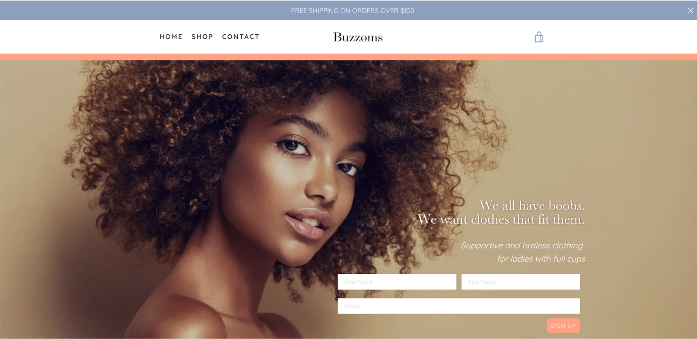
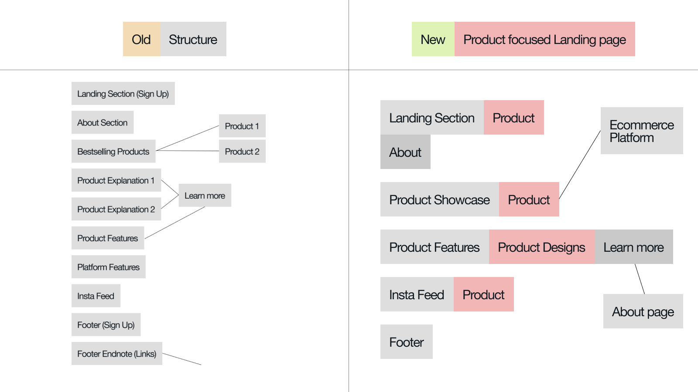
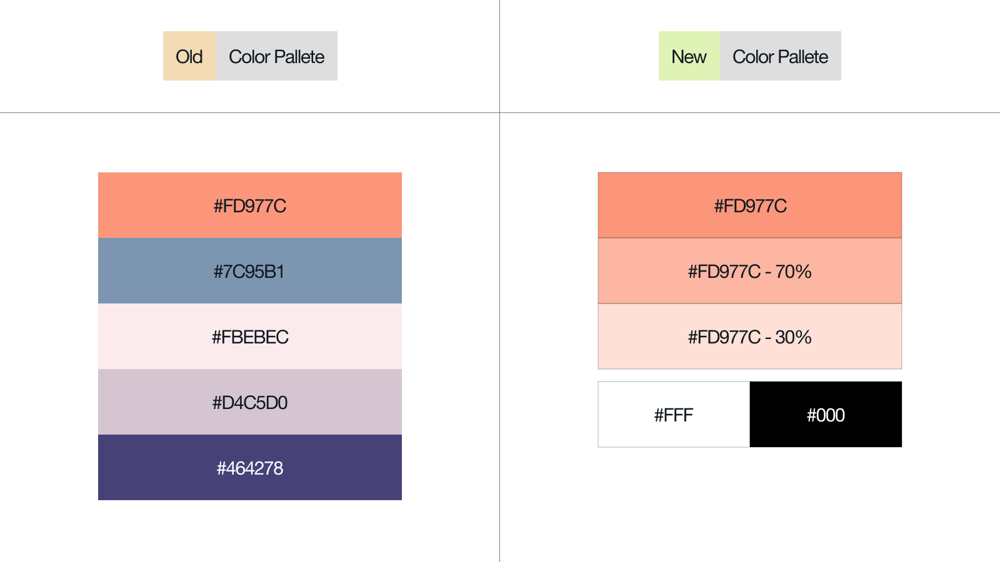
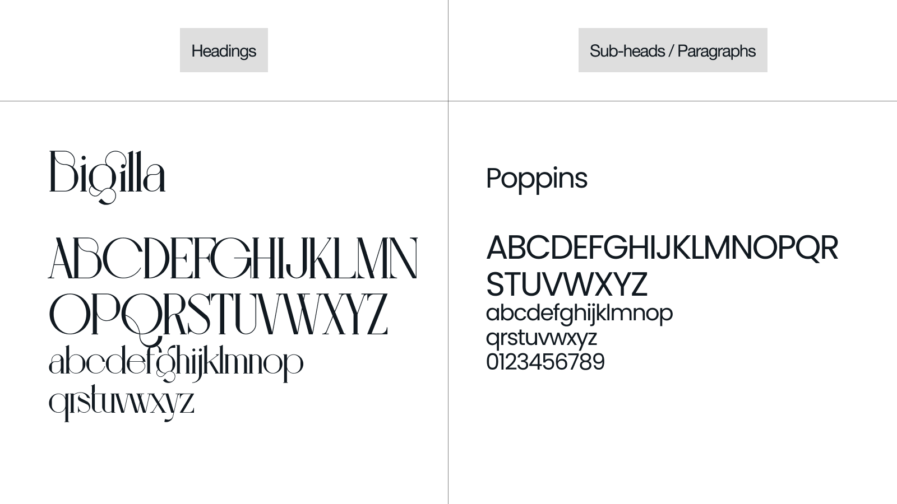
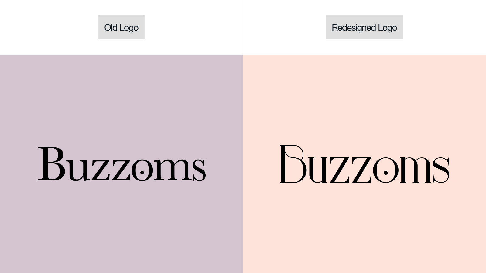

Case Study
(*15 +)
Contents
What is Buzzoms
What is Brandathon
Team & Timeline
Process
Exploration phase
Scope phase
Shopper Research
Heuristic Evaluation
Brand Tone/Voice
Sitemap
Skeleton & Surface
Color & Typography
Logo Design
Visual Direction
Final Designs
Next steps
Client Feedback
WHAT IS BUZZOMS ?
Buzzoms is a fairly early-stage clothing brand for full-chested women. Brand’s aim stands to revolutionize the clothing industry by changing their mindset. Buzzoms brings trendy everyday wear, styled and designed for women with full cups. Having been launched recently, Buzzoms understood that they need to revamp the brand story to connect more with their users. And because of that, Buzzoms came to Brandathon for help.
WHAT IS BRANDATHON ?
Brandathon is a weekend-long branding hackathon featuring creatives from the worlds of design, copy, and strategy competing to rebrand early-stage startups that are being mentored by iconic founders, creative directors, and angel investors.
Brandathon usually has 2 different startups with 2 different creative teams competing against each other. But this time, it was a head-to-head battle between 2 teams designing for one single brand named Buzzoms. And the team with the better redesign wins the Brandathon.
Brandathon usually has 2 different startups with 2 different creative teams competing against each other. But this time, it was a head-to-head battle between 2 teams designing for one single brand named Buzzoms. And the team with the better redesign wins the Brandathon.

TEAM & TIMELINE
Collaborated with 3 incredibly talented creatives specializing in creative strategy, copywriting, and graphic design in a weekend long rebranding session. We created new brand guidelines, redesigned the landing page / ecommerce platform, and presented an updated pitch deck for ‘Buzzoms’, along with a thorough copywriting & social media strategy, all within 48 hours.
PROCESS
Used the ‘User-centered design’ process to create a basic project structure focusing on the user problems. We use design frameworks to create an outline for the project, and due to the time constraint, we used a mix of ‘5 elements of UX Design’ along with ‘User-centered design’ for approaching the Buzzoms’ design decisions.
EXPLORATION PHASE
As our first step, we spoke to Marshay, the founder of Buzzoms to ensure that we understand the brand tone and its values. Our meeting ended with a discussion of the deliverables she wanted for Buzzoms. We reorganized the deliverables and grouped them into ‘Copy’ and ‘Design’ tasks, as part of the Strategy phase of UX Design. And here are the details :
Copy :
-
Solidifying brand voice/tone
-
Creating a mission statement
-
Creating product feature descriptions
-
Writing product descriptions
Design :
-
Creating brand consistency
-
Designing a new landing page
-
Redesigning the overall e-commerce experience
-
Creating a customizable pitch deck
The main challenges :
-
The brand story needs to be fleshed out
-
The design assets need to be raised to the level of clothing
-
The landing page needs to be more eye-catching and descriptive
-
The e-commerce platform needs to be a more cohesive experience for shopping
After mapping out the challenges and tasks, we split ourselves into two groups to work simultaneously on Copy and Design. Yazad and Vivian handled the Copy, while Omar and I took the Design tasks.
While Omar started working on mood boards exploring colors and typography, I started doing research on the shopping needs, as part of the Scope phase of UX Design.
I further divided the research into two parts, consisting of a Shopper type research, and a complete audit to check the usability of Buzzom’s website/e-commerce platform, with the help of Jakob Nielsen's heuristic evaluation.
SHOPPER RESEARCH
Started with shopper research as the first step for the Scope phase.
While designing for e-commerce we usually use shopper types. And so, here those 5 types that we identified to set user goals :
While designing for e-commerce we usually use shopper types. And so, here those 5 types that we identified to set user goals :
-
Product Focused Users (Speed)Helping them would be by having - Fast/Streamline checkouts ~ (From the UX standpoint, it's basically to Reduce the number of clicks to perform a task)
-
Browsers (Leisure)The way to hold them in is to show New product lineups, like new Arrivals/Upcoming products ~ (One way could be - to make A dedicated section for Popular Items)
-
Researchers (Explore)The goal is to turn them into buyers by providing whatever information they seek. (One quick Idea could be - to show a comparison chart/diagram, to show how our product actually differs from others)
-
Bargain Hunters (Savings)So having newsletters/coupons/discount% - (And for this an Idea could be to add - A dedicated section for discounted items)
-
One time (Guest)Showcasing more & more Product Images/ and Comparing with other brands, and simply to blow their minds ~ The main goal is to turn them into regular users (And An Idea could be adding a simple option like - Checking out as a guest/without signing up)
HEURISTIC EVALUATION
Did a heuristic evaluation of the old site to complete the Scope phase.
This is what the old site looked like :

This is what the old site looked like :
This is what we found following Jacob Nielsen's usability heuristics :
-
Visibility of system statusThere is no feedback for the user when clicking the Sign-Up button in the landing section of the homepage.

-
Match between system and the real worldColor Options on the Product details page are text-based. Clicking on them (color option buttons), doesn't change the product color image. A clickable checkout button can't be viewed when sliding into the shopping cart details.
-
User control and freedomUsers can't check the price of a product without getting into the product details page.
-
Consistency and standardsMixed usage of button-hover design for multiple instances. The logo in the top left doesn't take you to the homepage, and this breaks the consistent web design convention, which also prevents users from ever returning to the homepage.
-
Error preventionTextboxes for signups do not provide feedback on internal errors, nor do they help the user prevent them. The form asks for a first and last name, yet will also accept a sign-up with just an email address. Yet, it is not mentioned that a name isn't required. Users can cart as many items as possible, without checking the stock from the product details page.
-
Recognition rather than recallThe sign-up section acts as the only placeholder landing section. The website prompts the signup form every time a user visits, even if the user has already signed up.
-
Flexibility and efficiency of useWhen a page is scrolled, the menu cannot be accessed without returning to the top of the page. Neither does the page have a button to take users to the top of the page easily. Users can't get to know the product price until getting into the product details page.
-
Aesthetics & Minimal designThe big chunk of text is hard to skim through due to a lack of consistent typography and usage of mixed alignment.
-
Help users recognize, diagnose, and recover from errorsThe website does handle page errors by redirecting to a separate error page and telling the users what went wrong without any technical jargon. However, Error codes are displayed to the user when internal errors or server errors occur, regardless of what the cause of the error is.
-
Help and documentationThere's a dedicated search page, but could only be accessed from mobile devices & tablets, and not from desktops viewports. Messages stating features such as (Free return, Free Shipping & 100% Money-Back) are only visible on mobile devices & tablets.
The next step while designing the UI would be, to consider all the shopper needs and combine them with some incremental heuristic changes in the Structure phase, to create the best e-commerce experience for our users.
BRAND TONE/VOICE
By the time, Omar and I completed working on the foundation for our design, Yazad and Vivian were ready with the copy for brand tone.
They noticed that Buzzoms' Instagram page had a more authentic tone and voice than the copy on Buzzoms' old site. This provided the direction for the brand tone, as the voice was already there.
They noticed that Buzzoms' Instagram page had a more authentic tone and voice than the copy on Buzzoms' old site. This provided the direction for the brand tone, as the voice was already there.
-
The persona of ‘The Honest Girlfriend’As close to family as a non-biological relative can be.
“She is your rock, support. She finds you a deal, she looks out for you. Checks your teeth for spinach. Openly speaks against injustice. Your success is her success. Doesn't let you fret. Provides a solution. Remains chic.” -
Guidelines :The customer should feel like Buzzoms is a friend who provides solutions. When creating the copy, imagine your friend asks what she should wear tonight. You give her your honest opinion about clothes that you think would look great on her.
SITEMAP
Before starting working on the UI, I reorganized the ‘Structure’ of the landing page, by shifting sections according to the needs of our users, and breaking down the information architecture of the whole site.

Omar and I started to work on the color and typography, while Yazad and Vivian started working on the web copy for the landing page.
COLOR & TYPOGRAPHY
We reimagined Buzzoms’ brand colors into a monochromatic palette, with 2 added neutrals of black and white. In order to make the brand more recognizable and distinct, we used the original orange as our primary color, to make sure that it expresses the feelings of excitement, enthusiasm, and warmth throughout the brand.

For typography, we decided to mix serif with sans serif, to showcase a visual hierarchy within the typefaces. The idea was to use an elegant serif typeface to take the lead on headings, and a commonly used sans serif acting as a supporting player for the paragraphs. So, we chose Bigila for the headers which clearly aligned with our confident and ambitious brand. And Poppins as the paragraph typeface, to have consistent legibility on the copy-heavy texts.

Logo Design
Omar redesigned the Buzzoms’ logo with the new typeface we selected for the brand.

VISUAL DESIGN
Going straight to the next phases of UX Design - Skeleton and Surface.
-
The universal idea of using Big header typography to attract and hold the user's attention, while establishing a clear information hierarchy. Breaking header texts into parts and using indents to create a visual balance / visual harmony throughout the composition.
-
Using dark-colored text over a light background, for better visual contrast and proper legibility.
-
Using images that support our newly formed brand tone, and tuning them to make sure they follow the same art direction.
-
Using gradients to add depth to the design, and bridging the gap of energy and warmth (representing yellow & orange)
FINAL DESIGNS
-
Hero SectionAdding the brand's tagline as the opening text, to make sure that the brand becomes more identifiable. Breaking sub-heading into 2 parts to illustrate brand’s aim, and brand’s work.
-
Products ShowcaseContinuing the same visual design. Showcasing the popular products, and adding prices underneath them. Adding a ‘View all products’ button, to a see the dedicated product page with all the products. Experimented with hover interactions, to get to the product details page, and check all the photos of a product.
-
FeaturesCreated a column with 2 main features showcasing the uniqueness of the brand. Adding buttons to learn more about the features on a separate about page.
-
Social ProofAs mentioned earlier that the brand voice was super authentic on Buzzoms’ Instagram page, we decided to keep the authentic comments & reviews on the new site as part of the social proof for the brand. And so we designed an interactive section, with a replicated mockup of Buzzoms insta page, showcasing user comments/reviews.
-
FooterShifted the newsletter sign-up card from hero to the footer section. Simplified the IE, and laid out the socials & information links into the footer.
-
MenuCreated an overlay Menu, with links to the landing page sections as the elements of the menu.
-
About pageA dedicated ‘About’ page explaining who we are, and what are our brand values. The page is divided into 3 sections, starting with a hero section showcasing our brand statement, and following with 2 other sections explaining the 2 main features of our unique product. The ‘Learn more’ button from the Features section, leads the users to this page.
-
Product pageStarting the enhancement of the shopping experience, with a newly redesigned Product page. The product page showcases detailed product features including - size, color, cup size, sleeve style, etc. Along with all these details, the product page also includes a newly written product description based on our new brand tone/voice.
-
Cart designDesigning a new cart overlay from components previously designed to make the overall design more consistent. Besides the product image and price, the cart overlay displays the quantity of the item along with an option to increase the quantity or remove it altogether.
-
Size chartAs part of the enhancement of the shopping experience, we reimagined Buzzoms’ sizing guide and created a new sizing system. Vivian specifically worked on it to align it to our brand tone and came up with the ‘Buzzoms Flawless Fit’ or the ‘BFF system’, a numerical sizing guide for a more inclusive feel. The sizing guide appears on all product pages, with a popup showing a size chart on the site itself.

NEXT STEPS
So we just did an entirely new branding and web redesign in a weekend with less than 48 hours in hand. However, there are still some questions to be asked at the end of the day.
-
Was it a successful redesign ?The redesign did solve quite a lot of problems, but yet I'm hesitant to say yes. Because after all, we didn’t have sufficient time to test our designs. And this is where we need Buzzoms to implement the designs and test them as soon as possible in order to assess the success rate.
-
How to test it ?Testing can be carried out by using heatmaps to track the user's behavior. And maybe it might be useful to add an option where the user can fill up a survey to determine their attitudinal reaction.
We can make incremental changes to the design over time, rather than doing an overhaul again since the main goal of the redesign was to ensure that users could achieve their goal.
-
But, what about the visual design ?
How can we test its success ?Although the aesthetics of a design are subjective, the way we used design thinking to determine color, typography, and layout ensures that the visual design is usable and appealing to our targeted audience.
Nevertheless, we can still experiment with specific aspects of the visual design (for example the checkout button) by using A/B tests with some tweaks, and see easily which visual design has a better conversion rate.
Client Feedback
" Druhin is an all-star UX designer. I worked with Druhin to rebrand our website for Buzzoms, my fashion startup company. His designs were unique, elevated, and amplified key elements of our brand. After just 48 hours of work, he turned around an entire website redesign for desktop and mobile, with detailed wireframes and mockups that made for a smooth and easy implementation. I couldn't recommend Druhin's work enough. "
Marshay Clarke
founder, buzzomS
Product lead, google
Info
Website
buzzoms.com
Website
brandathon.io
Timeline
apr ‘21 - 48 hrs
Awards
Winner
Brandathon ‘33
tools
Notion
Figma
Adobe Illustrator
Adobe After Effects
Figma
Adobe Illustrator
Adobe After Effects
discipline
Art Direction
UI/UX Design
UX Research
UI/UX Design
UX Research
Contact
(*7 +)